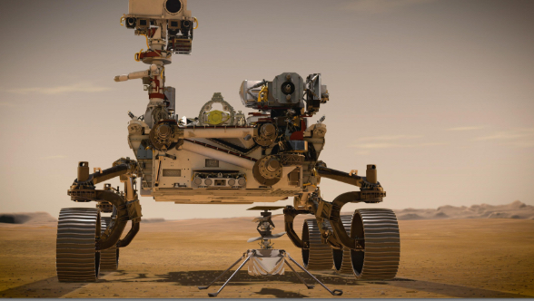
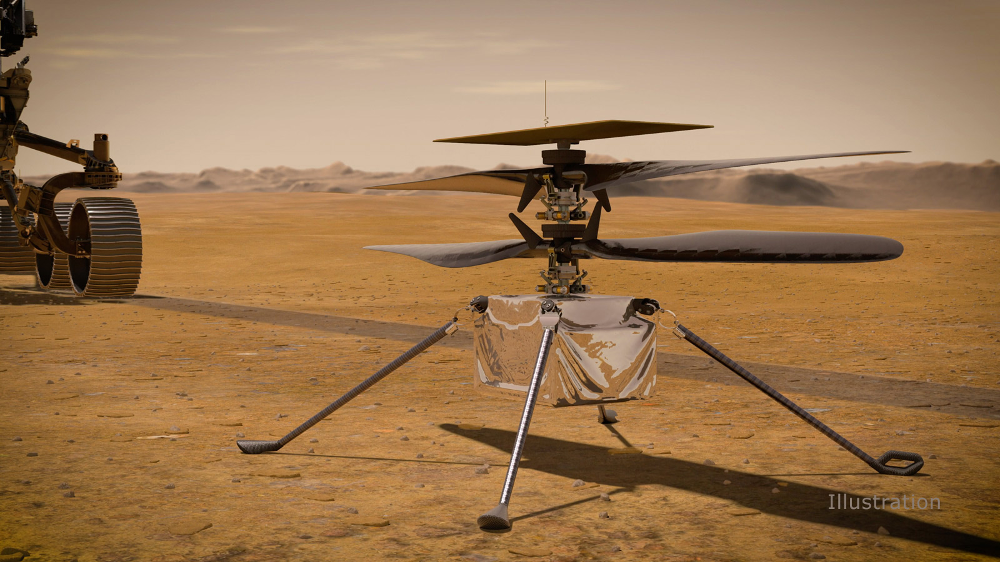

Perseverance Rover




Who is the most alone one?

Water found on the moon! Again!


February 6, 2018, we witnessed a historical moment all together.We watched the most important rocket launch event of the 21st century live. If there are those who missed that broadcast, they can watch the video of the broadcast. The world's largest rocket was sent into space. The last major rocket sent before this was the Saturn 5, launched in 1973. So in a sense half Space studies, which had been dormant for a century, regained action. Moreover, the rocket sent to space carried a load of fun. More precisely, very cool! It's an open car. So cool 🙂 This car is a Tesla The Roadster.Falcon Heavy is a combination of three rockets. Some time after takeoff they parted and successfully landed on earth. Side Since the rockets left early, they were able to return to where they were launched. But the central rocket a drone in the Atlantic ocean as it has to return after rising for a while would land on the platform. In other words, just like Tesla's self-driving cars, Space X's vessels without a cap Both rockets and this landing platform are completely controlled by computers. After these rockets split, they would crumble and fall into the sea. So its reuse is already possible However, because Space X tried to create "reusable rockets" after using them it was able to lower it vertically, almost defying the laws of physics. Of course, dozens of failures After the trial. Everyone is on air.Of course, after dozens of unsuccessful attempts. As a matter of fact, the side rockets successfully came back in this launch. While everyone was waiting for the third rocket to land on live broadcast, the image first froze. Then we started watching the broadcast not from the cameras but from the facial expressions of the presenters. While waiting for the third rocket to land, the image froze first. They say "We lost the center core." So what happened to the 3rd Rocket? Falcon rockets need to be slowed as they come back. Soft This is a must for a landing. They don't waste all the fuel on going upstairs for this. Part of it for return they are hiding. Restarting 3 of the 9 engines behind the central rocket on the return had to. However, only one of them could be fired. The rocket could not be slowed sufficiently as it approached the earth, and crashed into the ocean at a speed of 500 km per hour. Elon Musk says that the drone takes both engines of the ship with it.You can see many blooper videos even on Spacex's own channel on YouTube.
On April 2, 2019, 60 more satellites were sent. Therefore, our chance of seeing it is a little higher nowadays. In this article, I will tell you how you can see it, but first let's talk about what these are and what they will do. The Starlink project is a satellite network that has begun to be created in orbit around the world. Behind him are Elon Musk, one of the world's most popular entrepreneurs, and his space company SpaceX. SpaceX rockets have usually placed satellites belonging to various countries of the world into orbit or carried scientific materials to the ISS as in the CRS missions that I watched live and transferred to you from this channel last year. In the Starlink project, they place their own designed telecommunication satellites into orbit. By using them, they plan to provide very fast and affordable internet service to every point of the world, including the most remote corners. This is a very ambitious and costly project. By Elon Musk in 2015 when announced As always, it was perceived as a very difficult project to believe. And again, as usual, the targeted date for 2017 could not be achieved. However, 1 year after this date, the first 2 satellites named TenTen A and TenTen B were placed in orbit. Yes, TenTen, the comic book hero we know, named these satellites. Why? Because almost every vehicle in SpaceX and Tesla projects is given such names. To a TenTen adventure that has not been explained but I think it was published 10 years before the moon went “ lunar warriors ”they made a reference